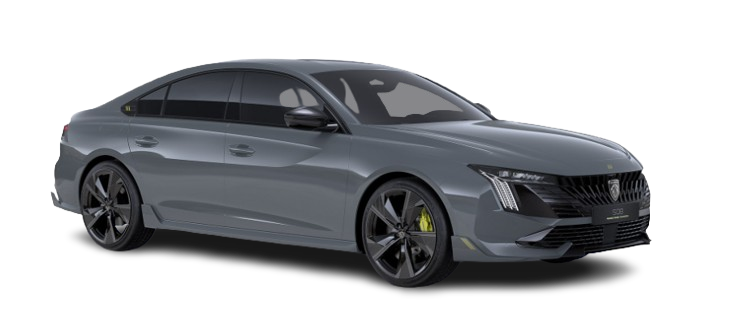
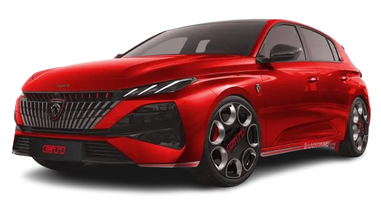
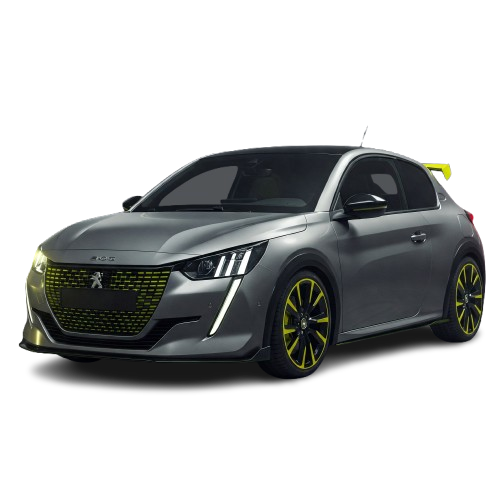

Voiture sportive
Voiture électrique

La Peugeot 508 PSE est une berline sportive hybride conçue pour offrir des performances élevées et un design agressif
Grâce à son moteur 1.6 turbo associé à deux moteurs électriques,
elle développe 360 ch et bénéficie d’une transmission 4 roues motrices
Cette configuration lui permet d’atteindre le 0–100 km/h en 5,2 s,
tout en offrant une conduite précise et une excellente stabilité
C’est la Peugeot la plus puissante jamais produite, combinant sportivité, technologie et efficacité

La Peugeot 308 GTi est une compacte sportive conçue pour offrir des performances élevées et un comportement précis
Grâce à son moteur 1.6 turbo développé par Peugeot Sport,
délivre 270 ch et profite d’un châssis affûté
Cette configuration lui permet d’atteindre le 0–100 km/h en environ 6 s,
en offrant une excellente agilité et une direction réactive
C’est l’une des Peugeot sportives les plus emblématiques, combinant puissance, dynamisme et efficacité

La Peugeot 208 GTi est une petite sportive conçue pour offrir des performances vives et un style agressif
Grâce à son moteur 1.6 turbo de 200 à 208 ch selon les versions,
Elle propose des accélérations rapides et un comportement très dynamique
Cette configuration lui permet d’atteindre le 0–100 km/h en environ 6,5 s,
Tout en offrant une excellente agilité et une direction précise
C’est l’une des citadines sportives les plus appréciées, combinant légèreté, réactivité et plaisir de conduite